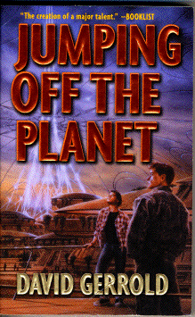

Jumping off the Planetby David Gerrold
publisher: Tor Books
Fiction, 281pages | 
(book cover art, Copyright ©2000 David Gerrold)
Used with Permission. |
Return to the Book MenuPrevious|Next
Description:
Charles "Chigger" Dingillian and his brothers are caught in the middle of their parent's usual post-divorce fighting. When their father takes them for a trip during one of his visitation periods, though, it quickly becomes apparent that they are going for a very different trip than they expected, and Chigger finds he must grow up a bit faster than he might like. (Warning: the back cover of the book contains a spoiler--don't read the cover.)
Recommended for: "people" people, macroeconomists, future lawyers, and explorers
Did-you-read questions:
Deadline: February 1, 2005.
These should be easy questions, but you should have the questions ready and keep an eye out during your reading. Each question should be answered with 1-2 sentences.
Note: these questions are not probably not the most important part of the book! Your essay will not have to cover these questions!
- What was the name of the engineer who built the beanstalk?
- What is the name of the cabin attendant for the Dingillian's trip from one-hour to Geosynchronous (and what is the condition of his hair?)
- What "club" does Douglas join on the way to Geosynchronous?
- What saying about worms does the Judge's "old sainted gramma" say?
- Who is/are Godot?
Report Questions:Deadline: Peer Review Session on February 8, 2005; paper due February 10, 2005.
You should write a 3 - 4 page essay on one of the following questions. Your essay should include examples and references to the book, unless otherwise specified. Page number references are sufficient for citing material from the primary book. If you use outside materials, cite your sources in full. If you would rather write on a different topic, you may, but clear it with Mr. Howe or Ms. Sullivan first.
- Do you think (other than the space stuff) that this is a realistic portrayal of a struggling family? Cite examples from the book for what was particularly well or poorly done.
- The author provides a lot of information about elevators, space, and the future of earth as part of the dialog. Such technical details can often detract from a story if they are not included well into the narrative. Do you think the author did a smooth job of it, or was it kind of extra to the story? What was particularly well- or poorly-crafted?
- We are told several times that spaceside law is different from dirtside law. What do you think of Judge Griffith's courtroom? Is this a better way, or is it reckless and subjective?
- At times the Dingillians seem like a distant family. At other times, they are all too close. How is this reflected in the settings in which the story takes place?
Graphic and Presentation:
Deadline: February 21 - March 3, 2005.You will give a 10 minute presentation on both of the following:
- Convince your peers that they should (or should not) read this book. (This may include a brief summary of the book.) Give examples of what was cool or worthwhile in the book, and what you got out of it (or didn't).
- Describe a (realistic) science idea that you learned about in this book, citing information from at least 2 external sources (other than the dictionary). If you would like help choosing or understanding an idea from your book, you are invited to come talk to Mr. Howe or Ms. Sullivan.
Note: This presentation should not be just a reading of your paper!Along with this presentation, you should have a graphic that will go with it. A Power Point presentation is recommended, but if you have a special idea for a something else, such as a model, an original video presentation, or a well done drawing/ painting/ sculpture/ etc., you may do so, provided it involves a similar level of effort and polish. Speak to Mr. Howe or Ms. Sullivan first if you are considering an alternate graphic format to the Power Point.
Return to the Book MenuPrevious|Next